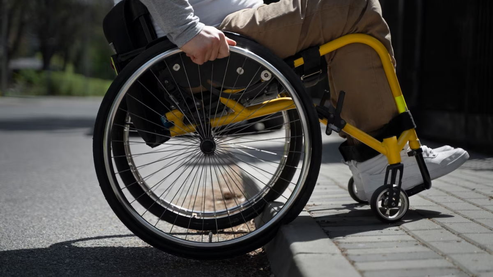

Acessibilidade na vida cotidiana
Acessibilidade para pessoas com deficiência e sua importncia
A acessibilidade é fundamental, especialmente para pessoas com deficiência, pois se trata de tornar ambientes, produtos e serviços acessíveis a todos, independentemente de suas limitações físicas ou cognitivas. Isso promove igualdade de oportunidades e acesso a recursos para todos. A acessibilidade é importante porque garante a inclusão social das pessoas com deficiência, permitindo-lhes maior independência e dignidade, contribuindo para sua autoestima e bem-estar.
A aplicação da acessibilidade é essencial em diversos ambientes, como prédios públicos, privados, espaços de lazer e transporte público, uma vez que as pessoas com deficiência precisam acessá-los e participar da sociedade. Além disso, é fundamental para cumprir as leis, como a Lei Brasileira de Inclusão, que torna obrigatória a acessibilidade em ambientes públicos ou privados de uso coletivo.
A acessibilidade também beneficia a economia, pois permite que as pessoas com deficiência participem do mercado de trabalho e amplia o público atendido pelas empresas. Em resumo, a acessibilidade é um direito humano básico que beneficia a sociedade como um todo, promovendo igualdade, inclusão e crescimento econômico.
Para saber mais sobre este tema aperte neste link: ACESSIBILIDADE-PARA-PESSOAS-COM-DEFICIENCIA-E-SUA-IMPORTANCIA

Acessibilidade digital
A acessibilidade digital é essencial para garantir que pessoas com deficiência possam navegar na web com autonomia e independência. É comparável à instalação de elevadores em prédios para garantir acesso a cadeirantes. Além de ser uma obrigação legal, a acessibilidade digital beneficia a sociedade como um todo, tornando a web mais inclusiva.
No Brasil, embora haja leis como a Lei Brasileira de Inclusão, menos de 1% dos sites estão totalmente acessíveis para pessoas com deficiência. Isso exclui um público significativo, representando mais de 8,4% da população do país, dos ambientes digitais.
A acessibilidade digital não é importante apenas para pessoas com deficiência, mas também para idosos, crianças e pessoas temporariamente com limitações físicas. Além disso, é fundamental do ponto de vista legal e também para melhorar o posicionamento de um site nos motores de busca, como o Google.
Os principais tipos de acessibilidade digital são definidos pelas Diretrizes de Acessibilidade de Conteúdo da Web (WCAG 2.2): Perceptível (elementos devem ser visíveis), Operável (elementos devem ser interativos de várias formas), Compreensível (informações devem ser apresentadas de forma lógica) e Robusto (compatibilidade com diversos dispositivos e tecnologias assistivas). Garantir a acessibilidade em todas essas áreas é crucial para uma experiência inclusiva na web.
Para saber mais sobre este tema aperte nestes dois links: ACESSIBILIDADE-DIGITAL, RESULTADOS-DIGITAIS

Acessibilidade em edifícios
Em 2018, foi regulamentada uma lei de acessibilidade em edifícios, garantindo fácil acesso para pessoas com deficiência ou mobilidade reduzida nas áreas comuns de condomínios residenciais. A lei exige que novos empreendimentos incluam recursos de acessibilidade desde a fase de projeto. Antes dessa regulamentação, muitos condomínios não ofereciam recursos básicos de locomoção, como rampas, elevadores, calçadas rebaixadas ou portas mais largas.
Essa lei também estabelece que as adaptações não podem gerar custos adicionais de condomínio para os moradores ou aumentar o valor do imóvel. Além disso, todas as áreas comuns devem ser apropriadas para circulação e lazer de idosos, gestantes e pessoas obesas.
Entre as principais medidas de acessibilidade exigidas estão: pisos nivelados para cadeiras de rodas, calçadas com áreas rebaixadas nos acessos, piso tátil nas rotas de circulação, botões de elevadores com sinalização em braille, banheiros adaptados, portas largas para cadeiras de rodas, sinalização visível em degraus, vagas de estacionamento para cadeirantes e idosos próximas aos acessos e espaço de circulação entre essas vagas e as portas de acesso do condomínio.
Para garantir a implementação das medidas de acessibilidade, o síndico deve estar atento às infrações, e os moradores podem denunciar erros. Caso algum morador não se sinta contemplado pelas medidas, pode apresentar considerações em uma assembleia de condomínio, onde novas modificações podem ser aprovadas, mas adaptações que não são previstas por lei podem gerar custos adicionais.
Em 2020, foi adicionado um decreto à lei que garante que modificações realizadas dentro dos apartamentos para facilitar a vida de pessoas com deficiência não podem gerar custos adicionais, desde que sejam especificadas na etapa de construção. Caso contrário, os custos relacionados à adaptação do apartamento ficam a cargo do proprietário.
Para saber mais sobre este tema aperte neste link: ACESSIBILIDADE-EM-EDIFICIOS

Acessibilidade no mercado de trabalho
A acessibilidade é fundamental para empresas receberem profissionais e clientes com deficiências. Cerca de 8,4% da população brasileira (17,3 milhões de pessoas) possui algum tipo de deficiência, sendo quase metade idosos. No entanto, apenas 28,3% das pessoas com deficiência em idade de trabalhar estão no mercado de trabalho, em comparação com 66,3% das pessoas sem deficiência.
Para aumentar a inclusão no mercado de trabalho, as empresas precisam adotar projetos e ações de acessibilidade. Isso envolve garantir que o ambiente de trabalho seja acessível a todos, independentemente de suas deficiências. A acessibilidade no ambiente de trabalho se refere à capacidade de todos os profissionais exercerem suas funções sem barreiras, como rampas, elevadores e vagas de estacionamento para pessoas com deficiência. Existem diferentes tipos de acessibilidade, dependendo das categorias de deficiência, como física, visual, auditiva, intelectual, psicossocial e deficiência múltipla.
Para saber mais sobre este tema aperte neste link: ACESSIBILIDADE-NO-MERCADO-DE-TRABALHO